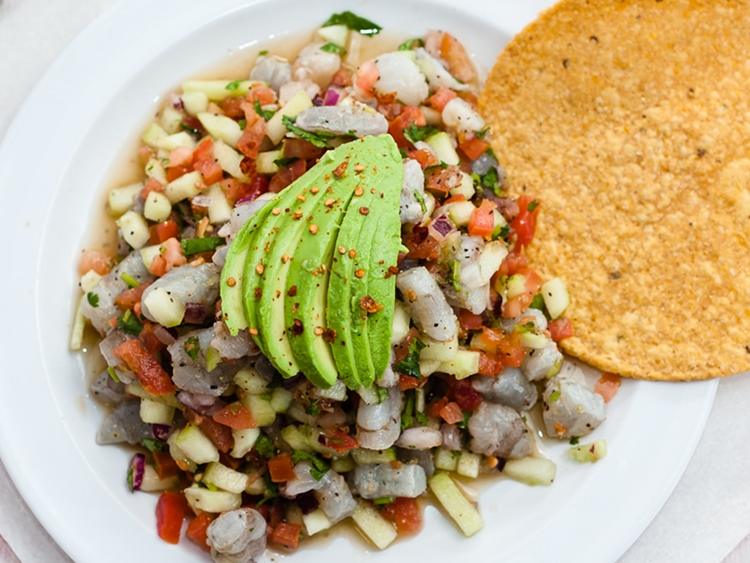

ceviche

Ceviche is a peruvian dish based on shrimps and different types of vegetables like onions, tomato and oyster juice
Ingredients
- Shrimps
- Oyster Juice
- Onions
- Avocado
- Species (pepper, salt, garlic powder)
Steps
- Marinate the shrimps(peeled and washed) with lemon juice and salt
- Keep it in the fridge while you chop the vegetables
- Add tomatoes, chiles, onion, cilantro and oregano
- Let it marinate a couple hours in the fridge
- After time, incorporate both shrimps and vegetables into the same dish
- Serve